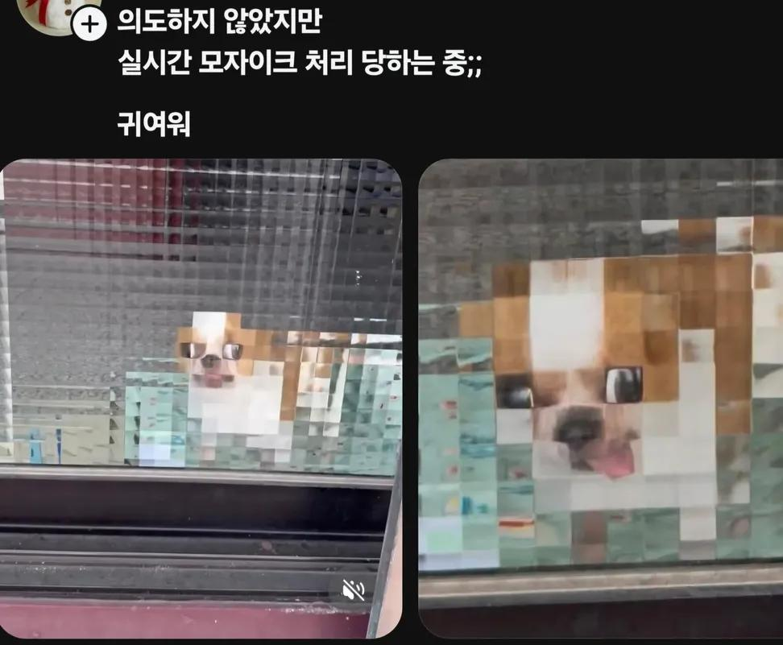
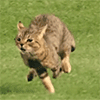
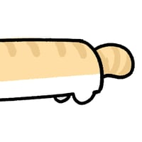

55 · 14 · 6 시간 전 · 원문

😋ㅓ
ㅠ ㅠ
수집 당시 댓글 14개
주가하락 · 9 시간 전

렙용사 · 9 시간 전
댕청미 +200
락스보이 · 8 시간 전
멈뭄미
아쎄이 · 7 시간 전

왜그러냐진짜로 · 7 시간 전
멈멈미
제육볶음맛있다 · 7 시간 전
위스키봉봉 · 6 시간 전
혓바닥 ㅋㅋ
댕댕추 · 6 시간 전
고먐미 귀여워
와일드닉 · 6 시간 전
갑자기 마인크래프트 됐노 ㅋㅋ
칡쇼 · 6 시간 전
주인님 구해주세요!
달려가자 · 6 시간 전
왜용 · 6 시간 전
치뫄뫄 ㅋㅋㅋㅋㅋ
감전당한전기맨 · 3 시간 전
모자이크 해도 혓바닥이 신원 다 알려줌 ㅋㅋ
용두산엘레지 · 34 분 전
댕청미 +200 인정. 이 표정에 맘마미아 안 나올 수가 없음
